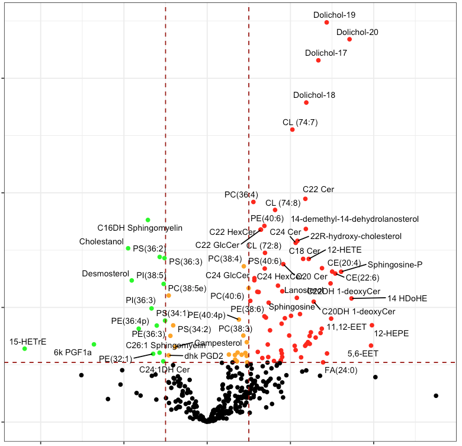
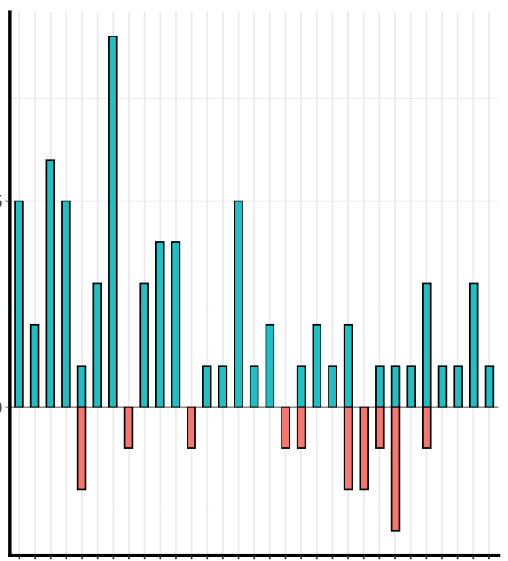
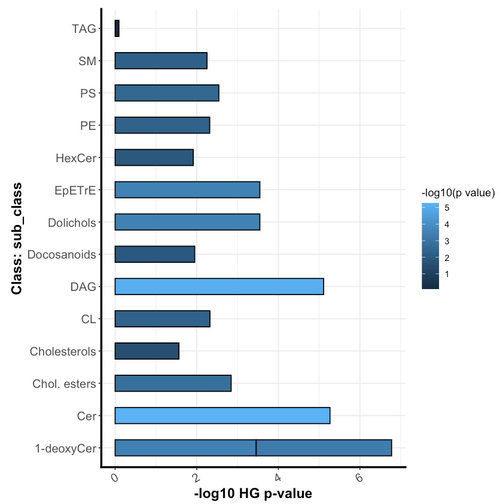
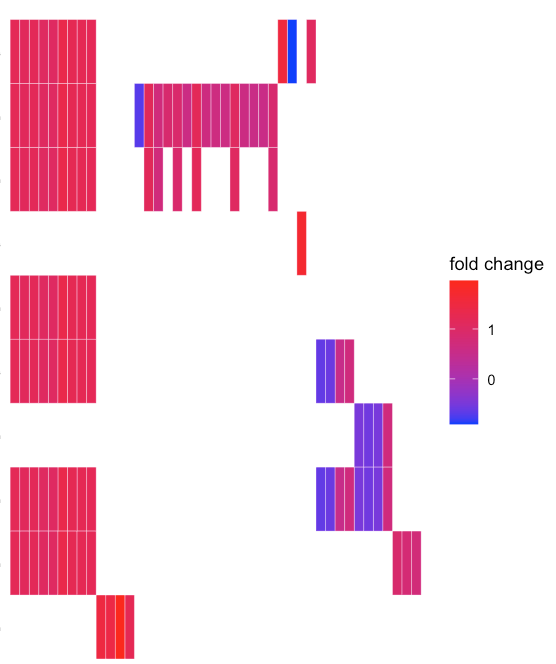
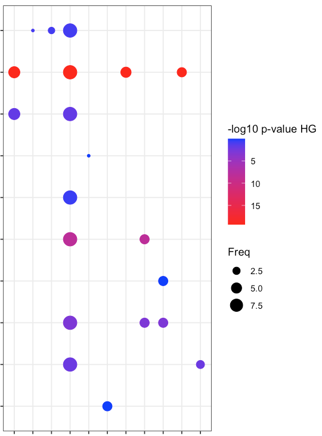

Input the Study, Factors and Analysis type Information
Specify your study here, Resolve Analysis and Factors, then select Analysis and Factors.
Study Information
:
Study ID:
Analysis:
Core G Fatty acids/Eicosanoids
Core J Sterols
Core K Prenols/Cardiolipins
Core E Neutral Lipids
Core I Sphingolipids
Core H Phospholipids
Core G Fatty acids/Eicosanoids___Core J Sterols___Core K Prenols/Cardiolipins___Core E Neutral Lipids___Core I Sphingolipids___Core H Phospholipids
Factor Column Name:
Diagnosis
Factor 1:
Cirrhosis
NASH
Normal
Steatosis
Factor 2:
Cirrhosis
NASH
Normal
Steatosis
{"study_id":"ST000915","fac1":"Cirrhosis","fac2":"Normal","anal":"Core G Fatty acids/Eicosanoids","faccol":"Diagnosis"}
KEGG Organism Code
:
String contains unsupported characters (should match `.*`).
Choose a Metabolite Class
:
sub_class
main_class
super_class

Find Significant Metabolites
Run significance of all the analysis summary together
Select Type of Normalization. How would you like to handle missing data?
:
half_of_min
remove_NAs
50percent
P-Value Threshhold
:
0.001
0.002
0.005
0.01
0.02
0.05
0.10
Log2FoldChange Threshhold
:
String contains unsupported characters (should match `.*`).
Select P Adjust Method
:
fdr
BH
holm
bonferroni
hochberg
hommel

Count Metabolites by Class
Count the metabolites of each class
Log2FoldChange Threshhold for counting
:
String contains unsupported characters (should match `.*`).

Enrichment Score by Class
Calculate the enrichment score of each metabolite class
Minimum # of (most significant) metabolites needed in a class to include the class in enrichment.
:
Value should be an integer
Analysis with KEGG
:
TRUE
FALSE

Heatmap
Heatmap of metabolites x enriched pathways
Font Size for X
:
Value should be an integer
Font Size for Y
:
Value should be an integer

Dotplot
Plot a dotplot of enrichment by class
Font Size for X
:
Value should be an integer
Font Size for Y
:
Value should be an integer